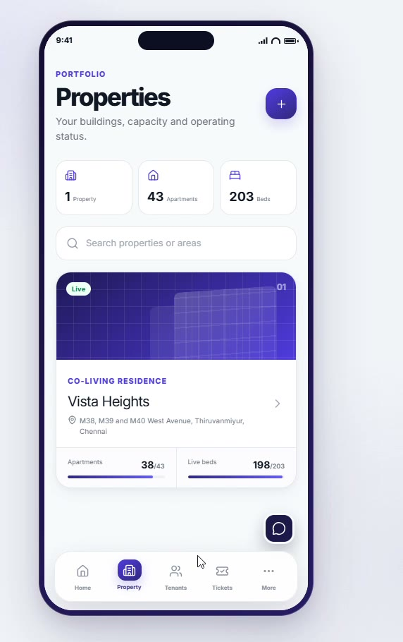

AI Advisory
AI Labs and Responsible AI programs that set strategy, guardrails and value cases.
Home / Solutions
Vishful, attendance, healthcare and government programs — products and projects built for real operations.
Product
Property, co-living and operations platform for portfolios, tenants and live occupancy.


Workforce
Time, attendance and shift tracking for on-site and distributed teams.
Life sciences
Patient, clinic and care-team workflows built for regulated healthcare operations.

Public sector
Digital programs for public agencies — citizen services, records and secure delivery.
Capabilities
Advisory, factories, agentic platforms and industry solutions that turn AI spend into outcomes.
AI Labs and Responsible AI programs that set strategy, guardrails and value cases.
Industrialized delivery for models, data products and operating models at scale.
GenAI and Agentic AI platform for software, data, IT operations and business processes.
Foundational platforms for building, evaluating and governing enterprise AI.
Domain solutions for banking, manufacturing, life sciences, telecom and more.
AI that moves from screens into operations, products and the physical world.
Architecture, modernization roadmaps and value-led transformation programs.
Data platforms, intelligence and decisioning for AI-ready enterprises.
Cloud-native build, product engineering and experience-led delivery.
SAP, Oracle, Salesforce and the core systems that run the business.
Digital continuity and manufacturing, digital engineering and product engineering — designed to accelerate time-to-profit and maximize return on innovation.
CloudSMART optimization, migration and multi-cloud operations.
Identity, detection, response and secure intelligent operations.
Experience-led workplace services for a distributed workforce.
Enterprise and carrier networks engineered for AI-era traffic.
Repeatable platforms that industrialize run and change.
USM that connects IT, operations and the business.
Experience, data and operations designed as one system.
Enterprise data products with governance built in.
Endpoint management and application security at global scale.
Collaboration suites designed for data residency and control.
Business process operations, education technology, global capability centers and supply chain programs that run at the speed of the enterprise.
Global capability centers that extend your operating model across markets.
Supply chain programs that run at the speed of the enterprise.